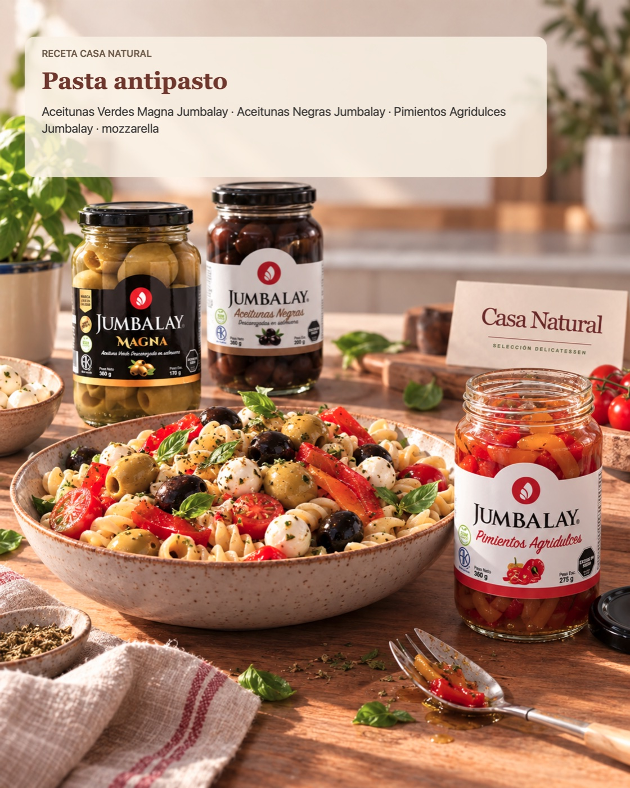

Qué necesitás
- Pasta corta
- Aceitunas verdes Magna Jumbalay
- Aceitunas negras Jumbalay
- Pimientos agridulces Jumbalay
- Mozzarella
Usá las cantidades que necesites según los comensales y ajustá las conservas a tu gusto.
Cómo prepararlo
- Cociná la pasta según las indicaciones del paquete y escurrila.
- Cortá los pimientos y la mozzarella en bocados. Escurrí las aceitunas.
- Mezclá las conservas con la pasta. Agregá la mozzarella cuando la pasta haya perdido el calor intenso y serví.